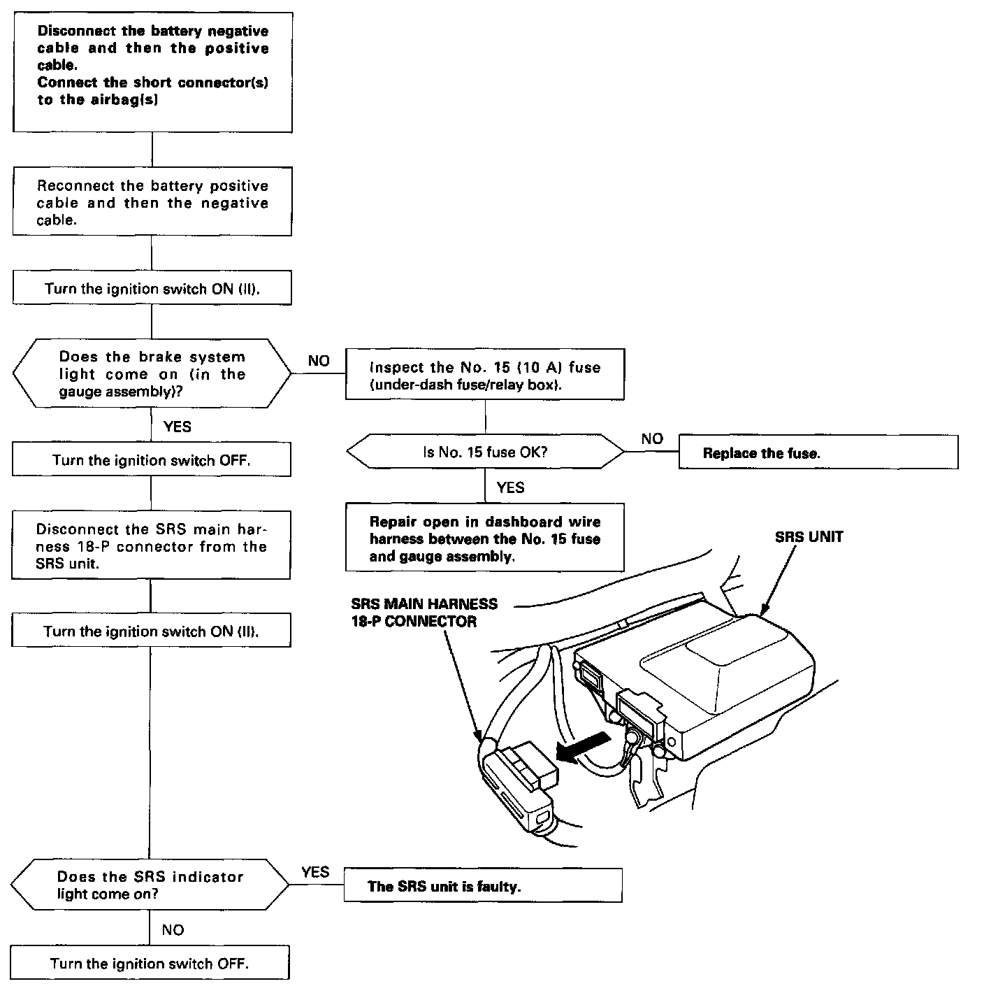
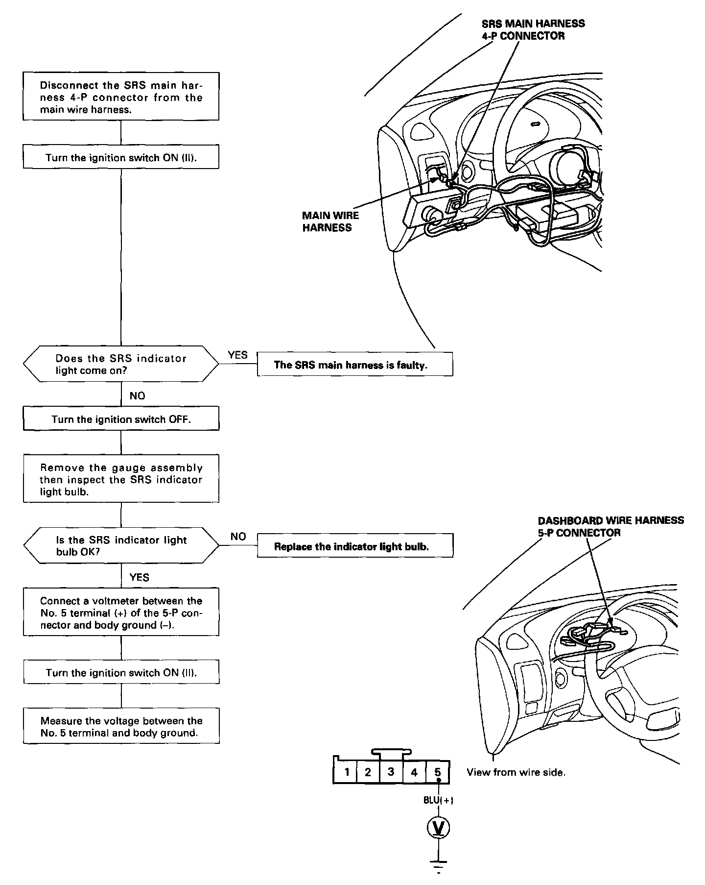
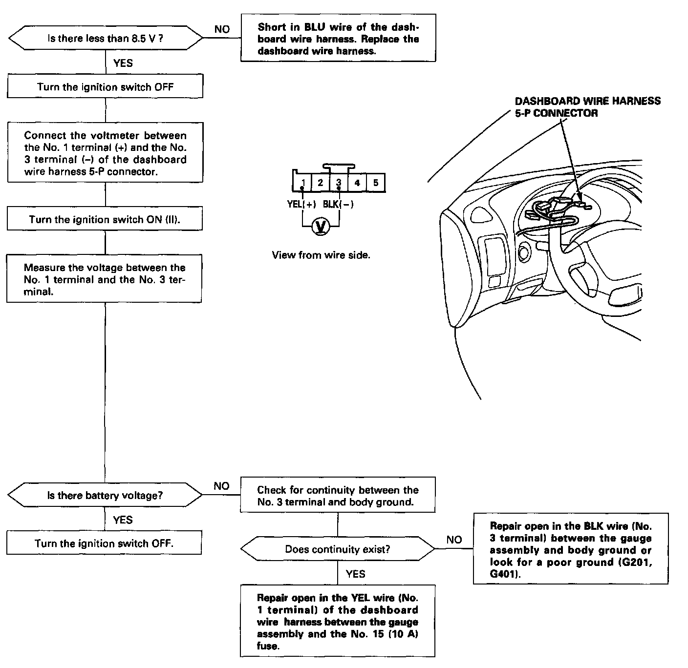
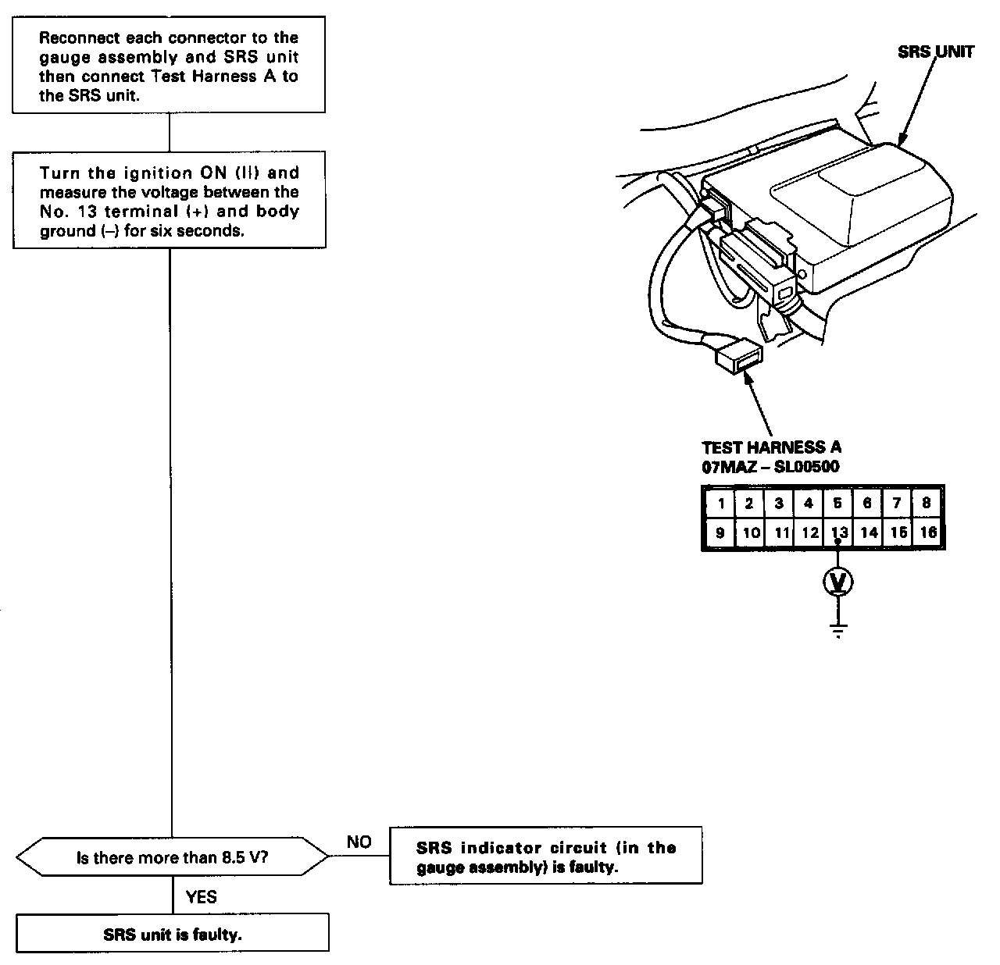

SRS Indicator Light Doesn't Come On
THE SRS INDICATOR DOES NOT LIGHTCAUTION: Use only a digital multimeter to check the system. If it's not a Honda multimeter, make sure its output is 10 mA (0.01 A) or less when switched to the smallest value in the ohmmeter range. A tester with a higher output could damage the airbag circuit or cause accidental airbag deployment and possible injury.
Step 1:

Step 2:

Step 3:

Step 4:

NOTE: The original radio has a coded theft protection circuit. Be sure to get the customer's code number before disconnecting the battery cables.